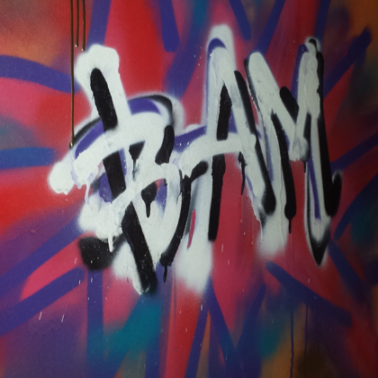
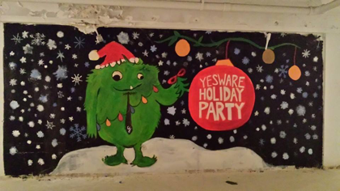
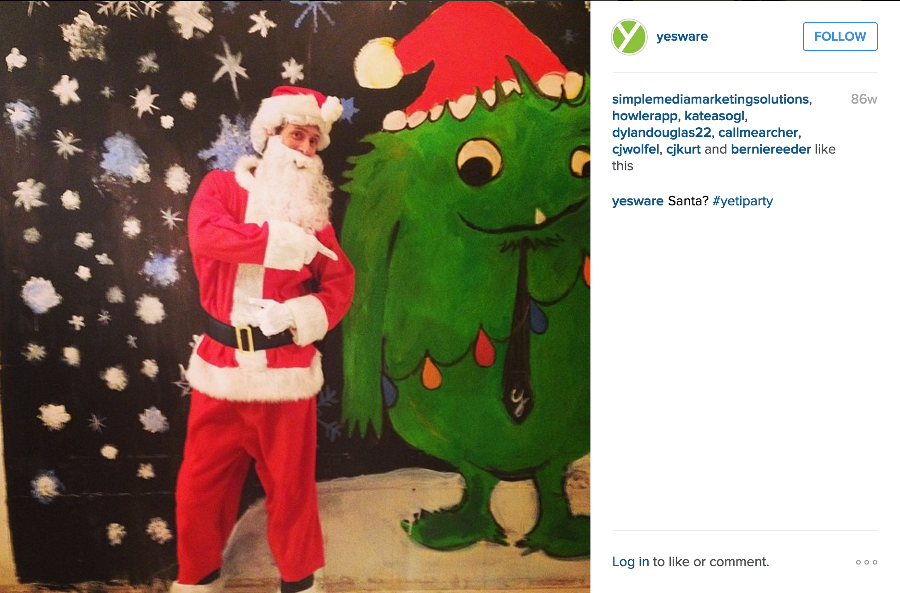

Available for remote contract UI/UX work
San Francisco, California
Starting September 2016, I will be living and traveling
to 12 different cities across 12 months with
Remote Year
That girl who's always trying to put googly eyes on everything, inanimate objects included
Happily working as a freelance Product Designer.
Looking for a Product Designer or UI/UX help?
Get in touch!
I was accepted into Remote Year, a program in which 75 working professionals come together to travel and live in 12 different cities across 12 months. Given this, I decided to make the jump and pursue a freelancing career.
After taking on several design side projects and finding success with them, I transitioned into a full-time Product Designer role at Yesware.
Given the success of our giant Yeti mural (see below), my colleagues and I were asked to graffiti our new office's bathroom stalls. No, we are not professional graffiti artists, but it was fun to step away from our computer screens and explore a different medium!
While preparing for our first public holiday party, I joked around that we should paint a giant Yeti mural instead of spending $200 on a small wall decal. Turns out that my colleagues thought I was being serious, so we all ended up painting this giant mural and had great fun!
 I began working with the wonderful team at Yesware as a Customer Confidence Advocate. It was here that I learned about our users, studied their business goals and pain points, and advocated on their behalf. Talking to users everyday and learning how they used the product was incredibly eye-opening and a great primer to empathy-driven design.
I published my first Geocities site! Complete with a counter, a trailing banana cursor and of course, sensible word art. We all remember these days, right?
My first foray into HTML and Flash was in Computer Lab. We produced flash animation and played fun memorable games like Oregon Trail.